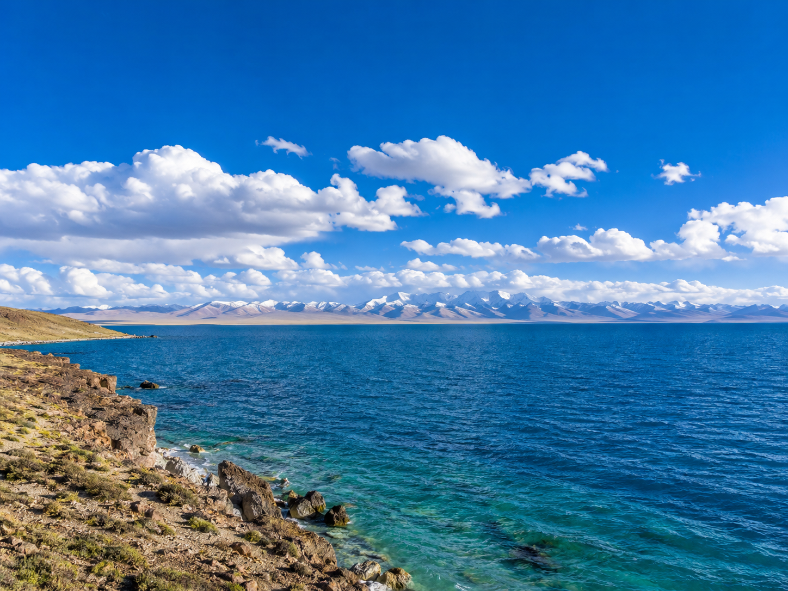

西藏三大圣湖之首，高原上的蓝色眼眸。
纳木错位于西藏自治区当雄县和那曲市班戈县交界处，湖面海拔4718米，东西长70多公里，南北宽30多公里，总面积1920平方公里，是西藏最大的湖泊，也是中国第三大咸水湖。纳木错在藏语中意为"天湖"，与玛旁雍错、羊卓雍错并称西藏三大圣湖。

从拉萨出发，沿青藏公路（G109）北上约190公里，经当雄县转往纳木错方向，全程约4—5小时车程。途中翻越海拔5190米的那根拉山口，可远眺纳木错全貌。到达扎西半岛后，可沿湖边徒步，参观合掌石、善恶洞等景点。建议在扎西半岛住一晚，纳木错的日出和星空是绝不可错过的体验。
1. 纳木错海拔极高，务必提前适应高原环境再前往。
2. 湖边风大温差大，即使夏季也需携带羽绒服。
3. 住宿条件简陋（简易板房或帐篷），对住宿有要求的需提前规划。
4. 湖面风大浪急，请勿下水嬉戏，尊重当地信仰不向湖中投物。
5. 冬季（11月至次年4月）道路封冻，景区基本关闭。
念青唐古拉雪山（远眺，从纳木错可见主峰）、羊八井地热温泉（返程途中，距当雄约80公里）。如果时间充裕，可继续西行前往班戈县，探访色林错等藏北高原湖泊群。